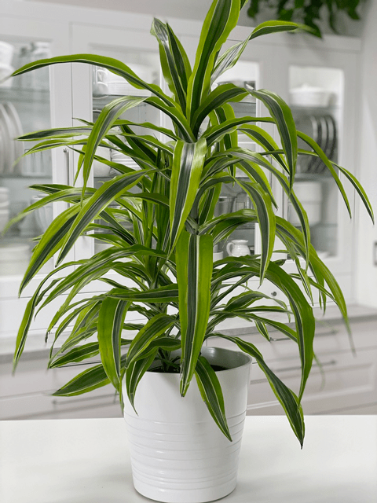
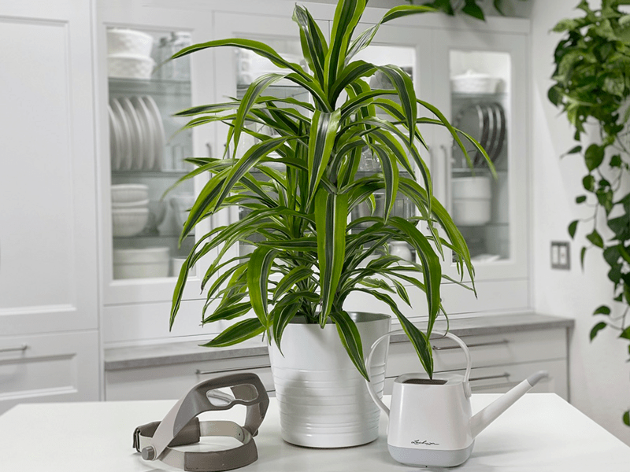
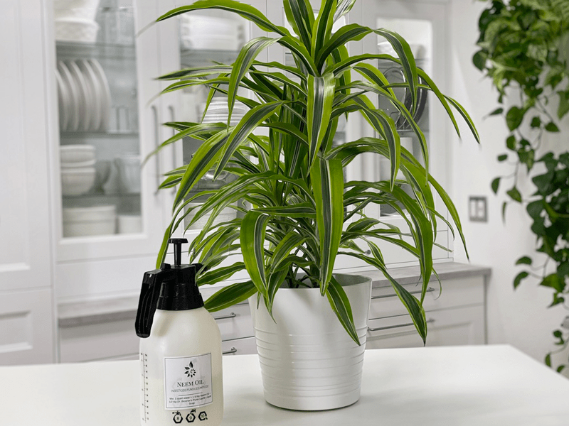

Dracaena Lemon Lime Plant
The Dracaena plant family consists of more than 110 different species of shrubby plants and trees. Today, I am showing you my Dracaena Lemon Lime Plant, which is a slow-growing plant with a long, dark green stripe down the center of each leaf, with lime green margins. It will grow up to a height of six feet–if I am a good plant mom, that is. It is an ideal foliage plant for brightening up the home. There are many different Dracaena varieties — something for everyone. They are also referred to as a corn plant (can you see the resemblance?)

I purchased this plant with my Uncle Billy in mind. I have a fond memory of a cornfield adventure we went on when I was a little girl. My uncle had a good friend that lived on the opposite end of a cornfield from him.
When they would get together, they would walk into the field and start whistling for one another… zeroing in on one another’s location. This particular day, Uncle Billy put me on his shoulders, which allowed my eyes to gaze over the tops of the high-growing corn. I felt like I was floating. Beneath me, Billy walked blindly, swatting away corn stalks, as he tuned in for his friend’s whistle.
It’s the silly little things in life that can turn into beautiful memories. So, when I first started to get into plants, this particular one took me back in time. Any plant that has the power to do that is MINE! haha
Water Requirements
These plants have a reputation for not needing a lot of water. However, they need a thorough soaking when the soil dries out! It is best to use filtered water, rainwater, or distilled water since they don’t like salts or minerals. Dracaenas prefer dry soil. If the soil remains soggy, it will promote fungus and root rot.
Light Requirements
A right mix of sunshine and shade is ideal for this dracaena, but it’s best to avoid direct sunlight. Although it grows quicker and better in bright light, you’ll also find it survives and thrives well enough in low light conditions.
Temperature Requirements
It prefers temperatures between 65 – 75 degrees (F). Under 55 degrees (F) will harm the plant, which may become noticeable if the leaves begin curling. Try and avoid the plant being near cold drafts, which will also cause harm.
Fertilizer – Plant Food
I feed mine once a month during the growing season with a 1/4 diluted complete liquid fertilizer.
Plant Characteristics to Watch For
Diagnosing what is going wrong with your plant is going to take a little detective work, but even more patience! First of all, don’t panic, and don’t throw out a plant prematurely. Take a few deep breaths and work down the list of possible issues. Below, I am going to share some typical symptoms that can arise. When I start to spot troubling signs on a plant, I take the plant into a room with good lighting, pull out my magnifiers, and begin by thoroughly inspecting the plant.
The leaves have brown tips
- If your dracaena has brown leaf tips, it can be a sign of low humidity, or the soil has been dry for too long.
- Solution: Try boosting the humidity with a room humidifier. But first, double-check and make sure that you have the plant on a proper watering schedule.
The leaves have black tips
- Black tips can be a sign of overwatering.
- Solution: Double check the watering schedule and back off if the soil is really wet. Refer to watering requirements up above and adjust accordingly.
Brown, dry spots on some of the leaves
- This problem is probably due to inconsistent watering. If the soil dries out too much, the tips of the leaves will present with brown tips and spots.
- Solution: Be consistent with your watering, but water only when needed. Check your plants about every 7 to 10 days and remember that our homes are often hot and dry in the winter, so plants may need to be watered more often.
The leaves have brown edges.
- Brown edges on a leaf can be a sign of chlorine and/or fluoride in the tap water or a build-up of salts within the soil.
- Solution: Fill your watering can with tap water and allow it to sit uncovered for at least 24 hours so that the chlorine and fluoride can evaporate. Another option is to use rainwater or distilled water instead.
There are white deposits on the pot near the drain holes.
- If you notice an accumulation of white deposits on the outside of the pot, this is a sign of excess salts.
- Solution: Use rainwater or distilled water to flush out excess salts.
Small brown spots trimmed in yellow
- If you spot this happening on your plant, it may have a leaf spot disease. The attacking fungus or bacteria leaves small brown spots trimmed in yellow, where it’s feeding on the leaves. These spots may vary in shape, color, and size.
- Solution: Immediately remove the affected leaves and isolate your Dracaena from your other plants for the time being. To treat leaf spot disease, try the homemade remedy of putting a tablespoon or two of baking soda and a teaspoon or two of mineral oil in a spray bottle of water. Shake the solution well and then spray all areas of the plant that are infected with brown spots.
The leaves are curling
- Curling leaves are a sign that the plant has been exposed to cold temperatures.
- Solution: Avoid putting the plant near cold drafts, windowsills, doorways, or air conditioners.

Additional Care
- Remove any dead, discolored, damaged, or diseased leaves and stems as they occur. Trim off brown leaf tips or spots with clean shears. Cut off only the damaged tips or spots, leaving a tiny margin of brown so as not to damage the remaining healthy foliage on the plant. If the entire leaf has turned brown, remove individual leaves at their base. Pull the leaf gently; it may come off on its own. If the leaf doesn’t separate with gentle pulling, snip through the stem with clean shears.
- Wipe leaves with a damp cloth to remove accumulated dust, keeping them free of pests and dust.
- Don’t use leaf shine on these plants.
- Use filtered water, as these plants are sensitive to salts and chemicals found in most tap water.
- If you want to reduce the size of the plant, simply cut off the top; over time, new foliage will grow back at the cut, producing a fuller look.
- If your plant isn’t thriving, try moving it to a spot with more light.

Common Bugs to Watch For
If you want to have healthy houseplants, you MUST inspect them regularly. Every time I water a plant, I give it a quick look-over. Bugs/insects feeding on your plants reduces the plant sap and redirects nutrients from leaves. Some chew on the leaves, leaving holes in the leaves. Also watch for wilting or yellowing, distorted, or speckled leaves. They can quickly get out of hand and spread to your other plants.
IF you see ONE bug, trust me, there are more. So, take action right away. Some are brave enough to show their “faces” by hanging out on stems in plain sight. Others tend to hide out in the darnedest of places.
-

-
Mealybugs
-

-
Scales
-

-
Aphids
-

-
Spider mites
- Mealybugs look like small balls of cotton. They can travel, slooooooowly, but they have a strong will and determination! Though they are slow-moving, if any plant is touching another, there is a chance the mealybug will hitch a ride on a new leaf and spread. They breed like rabbits of the insect world. Females can deposit around 600 eggs in loose cottony masses, often on the underside of leaves or along stems.
- Scales are dark-colored bumps that are primarily immobile insects that stick themselves to stems and leaves. They are rather inconspicuous and don’t look like a typical insect. They can range in color but are most often brownish in appearance. They’re called “scales” primarily due to their scale-like appearance on a plant, due to waxy or armored coverings. They are often seen in clumps along a stem, sucking away at the plant’s juices with their spiky mouthpart.
- Aphids are more commonly seen if you place your plants outdoors. Aphids are indeed bugs. They are tiny insects that, along with black, also come in shades of yellow, green, brown, and pink. They are often found on the undersides of leaves.
- Spider mites are more common on houseplants. They are not insects – they are related to spiders. These appear to be tiny black or red moving dots. Spider mites are nearly invisible to the naked eye. You often need a magnifying lens to spot them, or you may just notice a reddish film across the bottom of the leaves, some webbing, or even some leaf damage, which usually results in reddish-brown spots on the leaf.
Toxicity
The sap is poisonous to animals. It is not considered toxic to humans but should not be ingested. Keep it away from pets.
© AmieSue.com